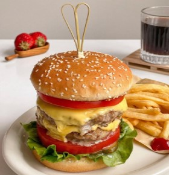
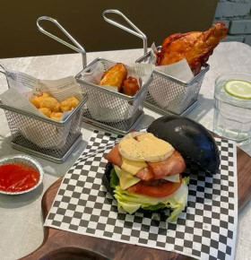
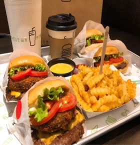
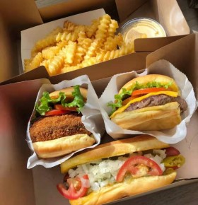
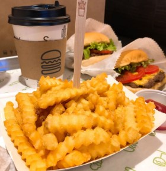

你身体里的每一个原子都来自一颗爆炸了的恒星。形成你左手的原子可能和形成你右手的原子来自不同的恒星。这是我所知的关于物理的最有诗意的事情：你们都是星尘

生活中想开难，看开难，放弃更难。许多事，并不是想放就能放下，想弃就能放弃。生命中总有一些事，明明知道是错误的，却一直坚持着，明明清楚是不好的，却一直守护着。


人还是要保持因生活细碎而满足的能力，比如品尝久违的美食，重温熟悉的街角，买到钟意的裙子，感知温柔的刹那，这些看似鸡零狗碎的生活碎片却是通向快乐星球的秘密通道

好像所有的糕点都是有魔力的，每每路过蛋糕店就鬼使神差的停下来，买上它几块，或是坐下来美美的吃上一块蛋糕，喝上一杯咖啡、奶茶。真是能美上一整天啊!
我们能走多久，靠的不是双脚，而是志向，鸿鹄志在苍宇，燕雀心系檐下;我们能做什么，靠的不是双手，而是智慧，勤劳砥砺品性，思想创造未来;我们能看多远，靠的不是双眼，而是胸怀，你装得下世界，世界才会容你。

人生的苦与乐如同一个硬币的两面，一面是苦，一面是乐。我们是活给自己看的，不必沉浸在他人的语言中，蜷缩于世外的阴影下。你若裹足不前，有人偷着笑；你若挣开束缚，前方春暖花开。